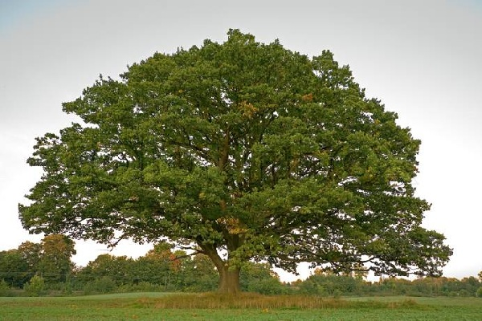
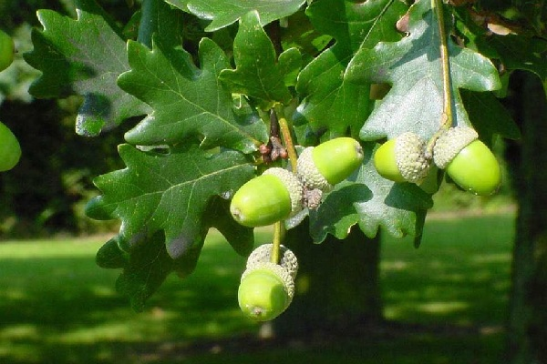
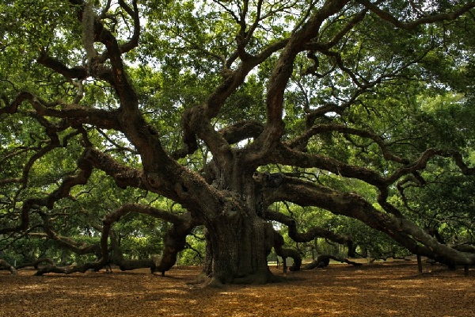

Lime
OAK
Oak is a strong and long-livedshrub-bearing tree. One of the Dryadsis named after this rotation.
Oak has a powerful structure, and a largedensity of wood. It grows in various localitieswithout being picky about conditions.Oak reaches maturity in 120 years.
Acorns are oak fruits and areessentially nuts. In Scandinavian mythology,acorns were associated with immortality.From acorns make coffee which give coffee.Acorns have antibacterial andenveloping properties, and usedto identify poisoning.
Carved leaves may be of different shapes.Dark bark with many acids. There areabout 600 species of oaks in the middleof which there are evergreens,with white foliage and other features.
Interesting facts about oak:(1) Oak is pictured on the arms of many cities and families.(2) Truffles are the most expensive mushrooms in the world, grow at the roots of oak.(3) The oldest oak is 2 thousand years old.



Author: Lime|DF
My Mail: dima3lime3lemon3@gmail.com